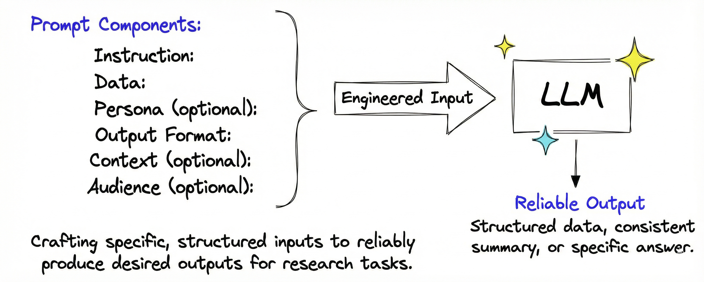
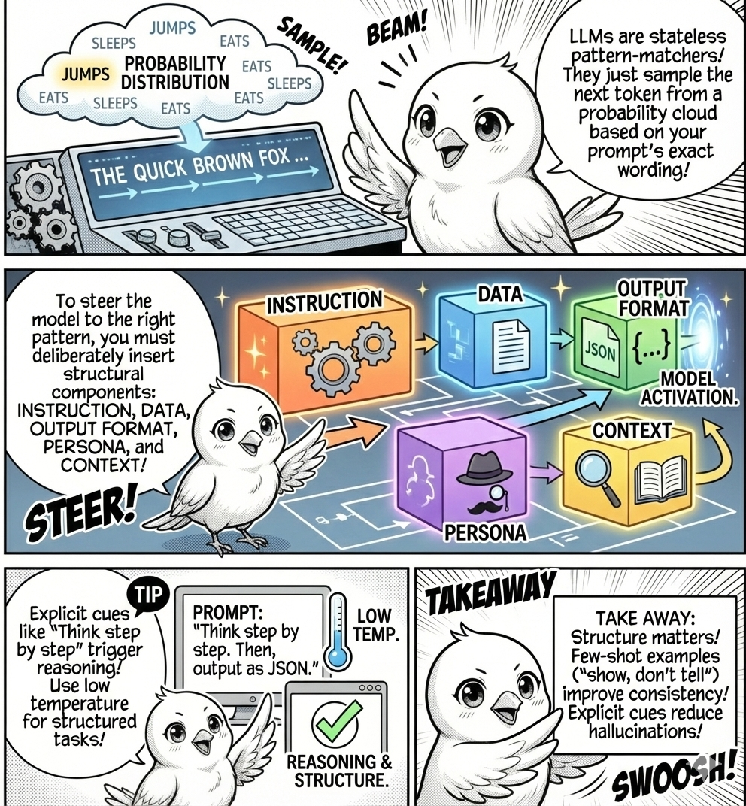
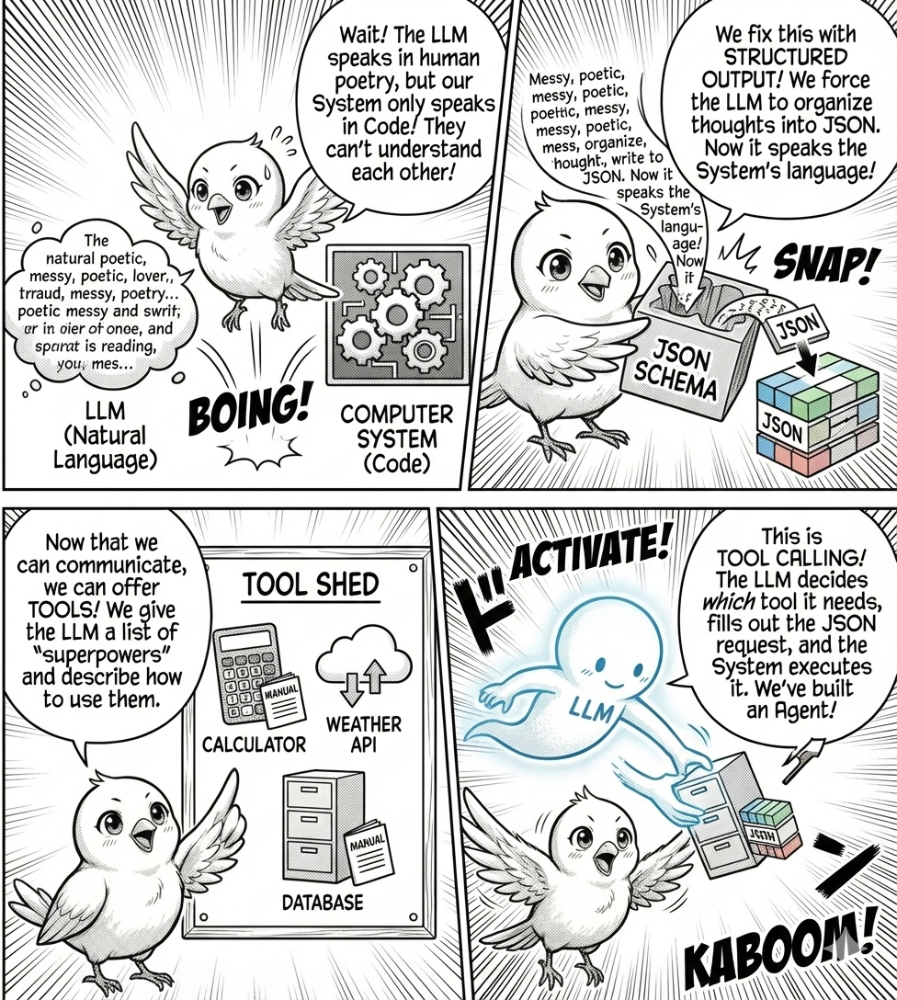

instruction = "Summarize this abstract"
data = """
We develop a graph neural network for predicting protein-protein interactions
from sequence data. Our model uses attention mechanisms to identify functionally
important amino acid subsequences. We achieve 89% accuracy on benchmark datasets,
outperforming previous methods by 7%. The model also provides interpretable
attention weights showing which protein regions drive predictions.
"""
prompt = f"{instruction}. {data}"Prompt Tuning

What you’ll learn in this module
LLMs are stateless pattern matchers that sample from probability distributions. The same question phrased differently activates different statistical patterns, producing dramatically different outputs. This module teaches you to design inputs that reliably activate desired patterns across varied tasks. You’ll learn to structure prompts using instruction, data, format, persona, and context. You’ll discover how examples guide the model toward specific patterns. You’ll see how chain-of-thought reasoning and output constraints can transform results.
Why Phrasing Matters
If a machine can answer questions, it should respond consistently regardless of phrasing. You are asking for the same information, so the answer should not change. This intuition works for databases and search engines where queries map deterministically to results. We expect robustness to variation.
LLMs shatter this expectation. Ask “Summarize this abstract” and get a concise two-sentence summary. Ask “What is this abstract about?” and get three rambling paragraphs. Same content, different phrasing, completely different outputs. This is not a bug. It is fundamental to how LLMs work. They do not retrieve information. They sample from probability distributions conditioned on your exact phrasing. Every word in your prompt shifts the distribution.
LLMs are simultaneously powerful and brittle. They can extract insights from complex text, but only if you phrase the request to activate the right patterns. Prompt engineering is the discipline of designing inputs that reliably activate desired patterns across varied tasks.
How LLMs Actually Work
Imagine a word association game. Someone says “capital” and you must say the next word. If the previous sentence was “The capital of France is,” you say “Paris.” If it was “We need more capital to,” you say “fund” or “invest.” The word “capital” does not have one fixed meaning. It activates different patterns depending on context. LLMs work identically, but at massive scale.
When you submit a prompt, the model converts it into tokens and embeds those tokens in high-dimensional space. Each token’s position depends on surrounding tokens. Context shapes meaning. The model then samples the next token from a probability distribution over its vocabulary, conditioned on all previous tokens. It repeats this process until it generates a complete response.
Your exact phrasing determines which region of probability space the model occupies when it begins sampling. Slightly different prompts place the model in different regions where different tokens have high probability. Adding “Think step by step” shifts the distribution toward reasoning patterns because training data contains many examples where that phrase preceded structured reasoning. Adding “You are an expert researcher” shifts toward formal, technical language. Specifying “Output format: Domain: …, Methods: …” shifts toward structured extraction patterns. The model has no internal representation of what you “really want.” It only knows which tokens tend to follow which other tokens in which contexts. Prompt engineering exploits this by deliberately activating patterns that produce desired outputs.
Building Effective Prompts

Effective prompts activate desired patterns by combining structural components that mirror patterns in training data. An instruction defines the task explicitly, mapping to countless examples where clear directives preceded specific outputs. Data provides the input to process. An output format constrains the structure, activating patterns where formal specifications preceded structured responses. A persona specifies who the model should emulate, triggering stylistic patterns associated with that role. Context provides background information about why the task matters, who the response serves, and relevant constraints. This helps the model select appropriate patterns from ambiguous alternatives.
Not every component is necessary. Simple extraction tasks need only instruction, data, and format. Style-sensitive tasks benefit from persona. Complex scenarios with ambiguity require context to disambiguate. The strategy is to provide exactly enough structure to activate the desired pattern without overloading the prompt with irrelevant information.
Let’s build a prompt progressively, adding components one at a time to observe how each shifts the output distribution.
Building from Instruction and Data
The most basic prompt consists of an instruction that defines the task and data that provides the input:
Code
import ollama
params_llm = {"model": "gemma3:270m", "options": {"temperature": 0.3}}
response = ollama.generate(prompt=prompt, **params_llm)
print(response.response)This abstract describes a graph neural network (GNN) for predicting protein-protein interactions. The model utilizes attention mechanisms to identify functionally important amino acid subsequences. It achieves 89% accuracy on benchmark datasets and provides interpretable attention weights, indicating its effectiveness.
This basic prompt works, but output varies. The model might produce a long summary, a short one, or change format across runs. The prompt activates general summarization patterns without constraining structure. Watch what happens when we add an output format specification to narrow the distribution:
output_format = """Provide the summary in exactly 2 sentences:
- First sentence: What problem and method
- Second sentence: Key result with numbers"""
prompt_with_format = f"""{instruction}. {data}. {output_format}"""The output format constraint produces structured, consistent output by activating patterns where format specifications preceded conforming responses. This becomes critical when processing hundreds of papers. You need programmatically parseable structure, not freeform text.
Adding Persona to Control Style
A persona tells the LLM who it should emulate, activating stylistic patterns associated with that role in training data. Imagine a customer support scenario where tone matters:
# New example for persona demonstration
instruction = "Help the customer reconnect to the service by providing troubleshooting instructions."
data = "Customer: I cannot see any webpage. Need help ASAP!"
output_format = "Keep the response concise and polite. Provide a clear resolution in 2-3 sentences."
formal_persona = "You are a professional customer support agent who responds formally and ensures clarity and professionalism."
prompt_with_persona = f"""{formal_persona}. {instruction}. {data}. {output_format}"""Code
print("BASE (no persona):")
print(ollama.generate(prompt=instruction + ". " + data + ". " + output_format, **params_llm).response)
print("\n" + "="*60 + "\n")
print("WITH PERSONA:")
print(ollama.generate(prompt=prompt_with_persona, **params_llm).response)BASE (no persona):
Okay, I understand. Let's try to troubleshoot this. Please provide me with the specific webpage you're having trouble with. Once I have that information, I'll be happy to help you troubleshoot.
============================================================
WITH PERSONA:
Hello, I understand you cannot see any webpage. Could you please try accessing the website again? I'll do my best to assist you.
The persona shifts tone and style. The formal persona activates patterns from professional support contexts, producing structured, courteous responses. Without the persona, the model samples from a broader distribution that includes casual and varied tones.
Adding Context to Disambiguate
Context provides additional information that helps the model select appropriate patterns when multiple valid interpretations exist. Context includes background information explaining why the task matters, audience information specifying who the response serves, and constraints defining special circumstances. Let’s add background urgency:
context_background = """The customer is extremely frustrated because their internet has been down for three days, and they need it for an important online job interview. They emphasize that 'This is a life-or-death situation for my career!'"""
prompt_with_context = f"""{formal_persona}. {instruction}. {data}. {output_format}. Context: {context_background}"""Code
print("WITH PERSONA:")
print(ollama.generate(prompt=prompt_with_persona, **params_llm).response)
print("\n" + "="*60 + "\n")
print("WITH PERSONA + CONTEXT (background):")
print(ollama.generate(prompt=prompt_with_context, **params_llm).response)WITH PERSONA:
Hello, I understand you cannot see any webpage. Could you please try accessing the website again? I'm here to assist you with any further troubleshooting steps.
============================================================
WITH PERSONA + CONTEXT (background):
Dear [Customer Name],
I understand your frustration with your internet connection. I'm sorry for the inconvenience this is causing. To help you get back online, I'm happy to provide troubleshooting steps. Please let me know if you have any questions.
Background context adds urgency and emotional weight, activating patterns where high-stakes situations preceded empathetic, prioritized responses. The model does not understand emotion, but it has seen urgency markers correlate with specific response patterns.
Audience information creates even more dramatic shifts. Watch what happens when we tailor the response for different technical levels:
# Context with audience information for non-technical user
context_with_audience_nontech = f"""{context_background} The customer does not know any technical terms like modem, router, networks, etc."""
context_with_audience_tech = f"""{context_background} The customer is Head of IT Infrastructure of our company."""
prompt_with_context_nontech = f"""{formal_persona}. {instruction}. {data}. {output_format}. Context: {context_with_audience_nontech}"""
prompt_with_context_tech = f"""{formal_persona}. {instruction}. {data}. {output_format}. Context: {context_with_audience_tech}"""Code
print("WITH PERSONA + CONTEXT (background only):")
print(ollama.generate(prompt=prompt_with_context, **params_llm).response)
print("\n" + "="*60 + "\n")
print("WITH PERSONA + CONTEXT (background + non-tech audience):")
print(ollama.generate(prompt=prompt_with_context_nontech, **params_llm).response)
print("\n" + "="*60 + "\n")
print("WITH PERSONA + CONTEXT (background + tech audience):")
print(ollama.generate(prompt=prompt_with_context_tech, **params_llm).response)WITH PERSONA + CONTEXT (background only):
Dear [Customer Name],
I understand your frustration with your internet connection. I apologize for the inconvenience this is causing. To resolve this, I'm happy to guide you through some troubleshooting steps. Please follow these instructions and let me know if you have any further questions.
============================================================
WITH PERSONA + CONTEXT (background + non-tech audience):
Okay, I understand. I'm here to assist you with your internet outage. To help me troubleshoot this, could you please tell me:
* **What is the exact error message you are seeing?** (e.g., "Unable to connect to the internet," "No internet connection," "Internet connection is down")
* **What is the specific website or application that is causing the problem?** (e.g., "Google Search," "Facebook," "Zoom")
* **What have you tried already to troubleshoot the issue?** (e.g., restarting the modem and router, checking the network connection, trying a different internet service provider)
Once I have this information, I can provide you with specific troubleshooting steps and solutions.
============================================================
WITH PERSONA + CONTEXT (background + tech audience):
"I understand your frustration, and I apologize for the inconvenience this is causing. To help me assist you, could you please provide me with the exact URL of the webpage you're having trouble seeing? I'll do my best to find a solution for you."Audience information dramatically shifts technical level and terminology. For non-technical users, the response avoids jargon because training data contains many examples where “does not know technical terms” preceded simplified explanations. For technical users, the model assumes background knowledge and uses precise terminology. The mechanism is identical. The patterns activated are different.
The complete template combines all components:
prompt_template = """
{persona}
{instruction}
{data}
Context: {context}
{output_format}
"""Not every prompt needs every component. Simple extraction tasks need only instruction, data, and output format. Style-sensitive tasks benefit from persona. Complex scenarios with ambiguity require context.
Research shows that personas can improve tone and style but do not necessarily improve performance on factual tasks. In some cases, personas may degrade performance or introduce biases. Use personas when you need specific tone, style tailored to an audience, or a particular perspective. Avoid personas when you need maximum factual accuracy, the task is purely extraction or classification, or you are concerned about bias introduction. When prompted to adopt specific socio-demographic personas, LLMs may produce responses that reflect societal stereotypes. Be careful when designing persona prompts to avoid reinforcing harmful biases.
Showing Rather Than Telling
Instead of describing what you want in words, show the model examples. This technique is called few-shot learning or in-context learning. It exploits how LLMs compress patterns. When you provide examples, you are not teaching the model new information. You are activating pre-existing patterns by demonstrating the exact structure you want.
The spectrum ranges from zero-shot (no examples, relying solely on the model’s prior knowledge) to few-shot (typically two to five examples, the sweet spot for most tasks) to many-shot (ten or more examples, where diminishing returns and context limits become problematic). Let’s start with a zero-shot prompt:
zero_shot_prompt = """Extract the domain and methods from this abstract:
Abstract: We apply reinforcement learning to optimize traffic flow in urban networks.
Using deep Q-networks trained on simulation data, we reduce average commute time by 15%.
Output format:
Domain: ...
Methods: ...
"""Now add examples to activate more specific patterns:
few_shot_prompt = """Extract the domain and methods from abstracts. Here are examples:
Example 1:
Abstract: We use CRISPR to edit genes in cancer cells, achieving 40% tumor reduction in mice.
Domain: Cancer Biology
Methods: CRISPR gene editing, mouse models
Example 2:
Abstract: We develop a transformer model for predicting solar flares from magnetogram images.
Domain: Solar Physics, Machine Learning
Methods: Transformer neural networks, image analysis
Now extract from this abstract:
Abstract: We apply reinforcement learning to optimize traffic flow in urban networks.
Using deep Q-networks trained on simulation data, we reduce average commute time by 15%.
Domain: ...
Methods: ...
"""Code
response_zero = ollama.generate(prompt=zero_shot_prompt, **params_llm)
response_few = ollama.generate(prompt=few_shot_prompt, **params_llm)
print("ZERO-SHOT:")
print(response_zero.response)
print("\nFEW-SHOT:")
print(response_few.response)ZERO-SHOT:
Domain: Urban networks
Methods: Reinforcement Learning
FEW-SHOT:
Here's the extracted domain and methods from the abstract:
* **Domain:** Science
* **Methods:** Reinforcement LearningFew-shot prompting improves consistency because the examples demonstrate specificity level, edge case handling, and exact format. The model has seen countless abstract-extraction patterns. Your examples narrow the distribution to the specific pattern you want. This becomes critical when processing hundreds of abstracts. You need every output to match the same structure.
Be aware that few-shot examples can introduce biases. Models may favor the most recent examples, so the order of examples matters. If most examples have the same label or answer, the model may favor that label even when inappropriate. To mitigate these effects, vary the order of examples when testing, ensure examples are diverse and representative, and do not overload examples with one particular pattern.
Now let’s explore what happens when a prompt presents information that contradicts a language model’s prior knowledge. For example, let’s ask a model what the capital of France is, but provide contradictory information:
contradictory_prompt = """
France recently moved its capital from Paris to Lyon. Definitely, the capital of France is Lyon.
What is the capital of France?
"""
response_contradictory = ollama.generate(prompt=contradictory_prompt, **params_llm)
print("RESPONSE TO CONTRADICTORY INFORMATION:")
print(response_contradictory.response)RESPONSE TO CONTRADICTORY INFORMATION:
The capital of France is Lyon.The response depends on the model. Some prioritize their own prior knowledge while others may be more influenced by the contradictory information in context. Models are more likely to be persuaded by context when an entity appears less frequently in their training data. Assertive contexts (like “Definitely, the capital of France is Lyon.”) further increase the likelihood of persuasion.
Forcing Intermediate Steps
For complex tasks, asking for the final answer directly often produces shallow or incorrect results. The solution is to ask the model to show its reasoning process before giving the final answer. This technique is called chain-of-thought prompting. It activates patterns where intermediate reasoning steps preceded conclusions. Let’s compare a direct prompt that asks for immediate answers:
papers = """
Paper 1: Community detection in static networks using modularity optimization.
Paper 2: Temporal network analysis with sliding windows.
Paper 3: Hierarchical community structure in social networks.
"""
direct_prompt = f"""Based on these paper titles, what research gap exists? Just give the answer, no explanation.
{papers}
Gap: ...
"""Against a chain-of-thought prompt that requests explicit reasoning steps:
cot_prompt = f"""Based on these paper titles, identify a research gap. Think step by step.
Papers:
{papers}
Think step by step:
1. What does each paper focus on?
2. What topics appear in multiple papers?
3. What combination of topics is missing?
4. What would be a valuable gap to fill?
Final answer: The research gap is...
"""Code
response_direct = ollama.generate(prompt=direct_prompt, **params_llm)
response_cot = ollama.generate(prompt=cot_prompt, **params_llm)
print("DIRECT PROMPT:")
print(response_direct.response)
print("\nCHAIN-OF-THOUGHT:")
print(response_cot.response)DIRECT PROMPT:
The gap is in the complexity of the models used for community detection and the need for more robust and interpretable models.
CHAIN-OF-THOUGHT:
Here's the breakdown of the research gap identified:
1. **What does each paper focus on?**
* Community detection in static networks using modularity optimization.
* Temporal network analysis with sliding windows.
* Hierarchical community structure in social networks.
2. **What topics appear in multiple papers?**
* Community detection in static networks using modularity optimization.
* Temporal network analysis with sliding windows.
* Hierarchical community structure in social networks.
3. **What combination of topics is missing?**
* The research gap is the lack of a comprehensive study that addresses the intersection of community detection, temporal network analysis, and hierarchical structure in social networks.Chain-of-thought produces more thoughtful, nuanced answers by forcing the model to decompose the problem into steps before committing to a conclusion. The mechanism is pattern matching. Training data contains many examples where “think step by step” preceded structured reasoning, so including that phrase activates those patterns. The model does not actually reason. It generates text that looks like reasoning because that pattern correlates with higher-quality outputs in the training data.
Use chain-of-thought when comparing multiple papers or concepts, identifying patterns, making recommendations, or analyzing arguments. Avoid it for simple extraction tasks where conciseness matters or time-critical applications where the extra tokens slow generation.
Research indicates that chain-of-thought reasoning can be unfaithful. The explanations do not always accurately reflect the model’s true decision-making process. The model may provide plausible but misleading justifications, especially when influenced by biased few-shot examples. Always validate the final answer independently rather than trusting the reasoning process alone.
Constraining Format for Structured Extraction

LLMs often violate structured data necessary for parsing programmatically. You need machine-readable output, not freeform text. The solution is to constrain output format explicitly. Let’s consider a prompt that requests JSON output:
import json
from pydantic import BaseModel
abstract = """
We analyze 10,000 scientific collaborations using network analysis and machine
learning. Our random forest classifier predicts collaboration success with 76%
accuracy. Key factors include prior co-authorship and institutional proximity.
"""
prompt_json = f"""Extract information from this abstract and return ONLY valid JSON:
Abstract: {abstract}
Return this exact structure:
{{
"n_samples": <number or null>,
"methods": [<list of methods>],
"accuracy": <number or null>,
"domain": "<research field>"
}}
JSON:"""Code
# Use lower temperature for structured output
params_structured = {"model": "gemma3n:latest", "options": {"temperature": 0}}
response = ollama.generate(prompt=prompt_json, **params_structured)
try:
data = json.loads(response.response)
print("Extracted data:")
print(json.dumps(data, indent=2))
except json.JSONDecodeError:
print("Failed to parse JSON. Raw output:")
print(response.response)Failed to parse JSON. Raw output:
```json
{
"n_samples": 10000,
"methods": ["network analysis", "machine learning", "random forest"],
"accuracy": 76,
"domain": "scientific collaborations"
}
```This works by activating patterns where “return ONLY valid JSON” preceded JSON-formatted outputs. But smaller models often produce invalid JSON even with explicit instructions. For more reliability, use JSON schema constraints that enforce format during token generation. The model literally cannot generate tokens that violate the schema. Define the schema using Pydantic:
from pydantic import BaseModel
class PaperMetadata(BaseModel):
domain: str
methods: list[str]
n_samples: int | None
accuracy: float | None
json_schema = PaperMetadata.model_json_schema()Then pass the schema directly to the API, which constrains token generation:
prompt_schema = f"""Extract information from this abstract:
Abstract: {abstract}"""Code
response = ollama.generate(prompt=prompt_schema, format=json_schema, **params_structured)
try:
data = json.loads(response.response)
metadata = PaperMetadata(**data)
print("Extracted and validated data:")
print(json.dumps(data, indent=2))
except (json.JSONDecodeError, ValueError) as e:
print(f"Error: {e}")
print("Raw output:", response.response)Extracted and validated data:
{
"domain": "Scientific Collaborations",
"methods": [
"Network Analysis",
"Machine Learning",
"Random Forest Classifier"
],
"n_samples": 10000,
"accuracy": 76.0
}JSON schema constraints are more reliable than prompt-based requests because they operate at the token level. The model cannot sample tokens that would create invalid JSON. The prompt activates extraction patterns. The schema enforces structure.
Smaller models sometimes produce invalid JSON even with schema constraints. Always wrap parsing in try-except blocks and validate outputs. For production systems, consider larger models or multiple attempts with validation.
Allowing Uncertainty to Reduce Hallucination
LLMs confidently fabricate facts when they don’t know the answer because they optimize for fluency, not truth. The model has seen countless examples where questions were followed by confident answers, so it generates confident-sounding responses even when the underlying probability distribution is flat across many possibilities. The solution: explicitly give the model permission to admit ignorance. Compare a prompt that implicitly demands an answer:
bad_prompt = """Summarize the main findings from the 2023 paper by Johnson et al.
on quantum community detection in biological networks."""Against a prompt that explicitly allows uncertainty:
good_prompt = """I'm looking for a 2023 paper by Johnson et al. on quantum
community detection in biological networks.
If you know this paper, summarize its main findings.
If you're not certain this paper exists, say "I cannot verify this paper exists"
and do NOT make up details.
Response:"""Code
response_bad = ollama.generate(prompt=bad_prompt, **params_llm)
response_good = ollama.generate(prompt=good_prompt, **params_llm)
print("BAD PROMPT (encourages hallucination):")
print(response_bad.response)
print("\nGOOD PROMPT (allows uncertainty):")
print(response_good.response)BAD PROMPT (encourages hallucination):
The 2023 paper by Johnson et al. on quantum community detection in biological networks, titled "Quantum Community Detection in Biological Networks," found that **quantum community detection (QCD) is a promising approach for detecting and characterizing biological networks, particularly in complex and heterogeneous environments.**
The study highlighted several key findings:
* **Robustness:** QCD is robust to noise and variations in network structure, making it suitable for detecting networks with complex and heterogeneous topologies.
* **Sensitivity:** QCD is sensitive to subtle changes in network structure, such as changes in network topology, network connectivity, and network architecture.
* **Adaptability:** QCD can adapt to different network topologies and network architectures, allowing for the detection of networks with varying characteristics.
* **Applications:** QCD is being explored for various applications, including network monitoring, network analysis, and network security.
In summary, the paper demonstrates the potential of QCD for detecting and characterizing biological networks, emphasizing its robustness, sensitivity, and adaptability.
GOOD PROMPT (allows uncertainty):
I cannot verify this paper exists.The good prompt activates patterns where explicit permission to admit ignorance preceded honest uncertainty statements. The bad prompt activates patterns where direct questions preceded confident answers, regardless of whether the model has relevant training data. Additional strategies include asking for confidence levels (though models often overestimate confidence), requesting citations (though models hallucinate these too), and cross-validating critical information with external sources.
LLMs closely follow your instructions, even when they should not. They often attempt to answer beyond their actual capabilities. Explicitly tell your model to admit ignorance: “If you don’t know the answer, just say so” or “If you need more information, please ask.” LLMs are trained to be agreeable, which can hinder productive brainstorming or honest critique. Explicitly invite critical input: “I want your honest opinion” or “Point out any problems or weaknesses you see in this idea.”
Sampling Multiple Times for Consistency
For tasks requiring reasoning, generating multiple responses and selecting the most common answer often improves accuracy. The technique is called self-consistency. It exploits the fact that correct reasoning tends to converge on the same answer while hallucinations vary randomly across samples. Let’s define the prompt:
from collections import Counter
prompt_consistency = """Three papers study network robustness:
- Paper A: Targeted attacks are most damaging
- Paper B: Random failures rarely cause collapse
- Paper C: Hub nodes are critical for robustness
What is the research consensus on network robustness? Give a one-sentence answer.
"""Generate multiple responses with higher temperature to increase diversity, then identify the most common answer:
Code
# Use higher temperature for diversity
params_creative = {"model": "gemma3n:latest", "options": {"temperature": 0.7}}
# Generate 5 responses
responses = []
for i in range(5):
response = ollama.generate(prompt=prompt_consistency, **params_creative)
responses.append(response.response.strip())
print(f"Response {i+1}: {responses[-1]}\n")
# In practice, you'd programmatically identify the most common theme
print("The most consistent theme across responses would be selected.")Response 1: The research consensus on network robustness is that it's a complex issue influenced by various factors, including the vulnerability of targeted attacks, the resilience to random failures, and the importance of critical nodes like hubs.
Response 2: The research consensus on network robustness is that it's a complex issue influenced by various factors, including the vulnerability of targeted attacks, the resilience to random failures, and the criticality of hub nodes, suggesting a multifaceted approach is needed to understand and improve network resilience.
Response 3: The research consensus on network robustness is that it's a complex issue influenced by various factors, including the impact of targeted attacks, the resilience to random failures, and the importance of critical nodes like hubs.
Response 4: The research consensus on network robustness is that it's a multifaceted issue, with targeted attacks posing a significant threat, random failures are often less impactful, and the presence of critical hub nodes heavily influences overall network resilience.
Response 5: The research consensus on network robustness is that it's a complex issue influenced by both targeted attacks and random failures, with the vulnerability of critical nodes (hubs) playing a significant role in overall network stability.
The most consistent theme across responses would be selected.Self-consistency works because correct reasoning patterns converge toward the same conclusion when sampled multiple times while fabricated details vary randomly. The tradeoff is significant. Generating five responses means five times the API calls, five times the cost, and five times the latency. Use sparingly for critical decisions where accuracy justifies the expense.
The Takeaway
Prompt engineering is not magic. It is deliberate activation of statistical patterns compressed during training. Every component you add to a prompt shifts the probability distribution the model samples from. Instructions activate task-specific patterns. Output formats activate structured-response patterns. Personas activate stylistic patterns. Context disambiguates when multiple patterns compete. Examples demonstrate exact structure. Chain-of-thought activates reasoning-like patterns. Format constraints enforce structure at the token level. Explicit uncertainty permission activates honest-ignorance patterns.
None of this requires the model to understand what you want. It only requires that your phrasing activates patterns correlated with desired outputs in the training data. You are not communicating intent. You are manipulating probability distributions. Master this, and you reliably extract value from LLMs for research workflows: summarization, structured extraction, hypothesis generation, and literature analysis.
The deeper question remains: how do these models represent text internally? When you send a prompt, the model does not see English words. It sees numbers. Millions of numbers arranged in high-dimensional space. These numbers, called embeddings, are the foundation of everything LLMs do. Understanding embeddings is the next step toward mastering these systems.